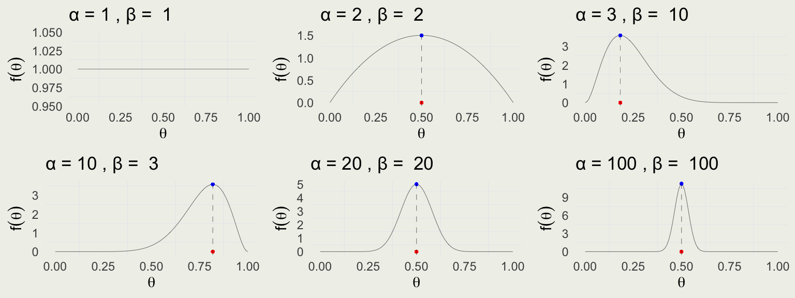

[1] 1 1 2 6 24 120 720 5040 40320 362880 [1] 1 1 2 6 24 120 720 5040 40320 362880NYU Applied Statistics for Social Science Research
\[ \DeclareMathOperator{\E}{\mathbb{E}} \DeclareMathOperator{\P}{\mathbb{P}} \DeclareMathOperator{\V}{\mathbb{V}} \DeclareMathOperator{\L}{\mathcal{L}} \DeclareMathOperator{\I}{\text{I}} \DeclareMathOperator*{\argmax}{arg\,max} \DeclareMathOperator*{\argmin}{arg\,min} \]
Homework review
Statistics is like building a bridge — we first simulate the conditions under which our bridge should withstand various forces, then we build a bridge, and once built, we test it before letting people drive on it.
Prior knowledge (not just prior distributions) here would be strength properties of concrete, optimal shape for the length, expected wind conditions, expected load of traffic, and maybe even expected momentum (mass * velocity) of an out-of-control tanker ramming into one of the supporting columns. The more important our “bridge,” the more testing we do.
Recall that for the continuous RVs we have, the CDF is defined as \[ \begin{eqnarray} F(x) & = & \int_{-\infty}^{x} f(t) \, \text{d}t, \, \text{and} \\ f(x) & = & \frac{\text{d}}{\text{d}x}F(x), \, \text{where } F \text{ is differentiable} \end{eqnarray} \]
To compute event probabilities: \[ \begin{eqnarray} \P(a \le X \leq b) & = & F(b) − F(a) = \int_{a}^{b} f(x) \, \text{d}x \\ \P(X \in A) & = & \int_{A} f(x) \, \text{d}x \end{eqnarray} \]
As in the case of PMFs: \[ \begin{eqnarray} f(x) \geq 0 \\ \int_{-\infty}^{\infty} f(x) \, \text{d}x = 1 \end{eqnarray} \]

Recall the definition of expectations for continuous random variables
We often write \(\mu\) or \(\mu_X\) for expected value of \(X\) \[ \mu_X = \E(X) = \int x \cdot f(x) \, \text{d}x \]
Variance is a type of expectation, which we often denote by \(\sigma^2\) \[ \sigma_X = \V(X) = \E(X - \mu)^2 = \int (X - \mu)^2 f(x) \, \text{d}x \]
It is often more convenient to write the variance as \[ \V(X) = \E(X^2) - \mu^2 \]
\[ \begin{eqnarray} \E(\theta) &=& \int_{0}^{1} \frac{1}{\mathrm{B}(\alpha,\beta)} \, \theta \cdot \theta^{\alpha - 1} \, (1 - \theta)^{\beta - 1} \, \text{d}\theta \\ &=& \frac{1}{\mathrm{B}(\alpha,\beta)}\int_{0}^{1} \color{red}{\theta^\alpha \, (1 - \theta)^{\beta - 1}} \, \text{d}\theta \\ \end{eqnarray} \]
\[ \begin{eqnarray} &=& \frac{\Gamma(\alpha + \beta)}{\Gamma(\alpha) \, \Gamma(\beta)} \cdot \color{red}{\frac{\Gamma(1 + \alpha) \Gamma(\beta)}{\Gamma(1 + a + b)}} \\ &=& \frac{\Gamma(\alpha + \beta)}{\Gamma(\alpha)} \cdot \frac{\Gamma(1 + \alpha)}{\Gamma(1 + \alpha + \beta)} \\ &=& \frac{\Gamma(\alpha + \beta)}{\Gamma(\alpha)} \cdot \frac{a \Gamma(\alpha)}{(\alpha + \beta) \Gamma(\alpha + \beta)} \\ &=& \frac{\alpha}{\alpha + \beta} \end{eqnarray} \]
Check the integral \(\int_{0}^{1} \, \theta^\alpha \, (1 - \theta)^{\beta - 1} \, d\theta\) using Wolfram Alpha
We can find the mode of this distribution by taking the log, differentiating with respect to \(\theta\), and setting the derivative function to zero \[ \begin{eqnarray} \E(\theta) & = & \frac{\alpha}{\alpha + \beta} \\ \text{Mode}(\theta) & = & \frac{\alpha - 1}{\alpha + \beta - 2} \;\; \text{ when } \; \alpha, \beta > 1. \\ \end{eqnarray} \]
The variance of \(\theta\) can be derived using the definition of the variance operator \[ \begin{eqnarray} \V(\theta) & = & \frac{\alpha \beta}{(\alpha + \beta)^2(\alpha + \beta + 1)} \end{eqnarray} \]
Notice when \(\alpha = \beta\), \(\E(\theta) = \text{Mode}(\theta)\)
Recall that Likelihood is the function of the parameter \(\theta\), assuming \(\theta \in [0,1]\) \[ \text{Bin}(y \mid \theta) = \binom{N}{y} \theta^y (1 - \theta)^{N - y} \propto \theta^y (1 - \theta)^{N - y} \]
Assuming \(N = 10\), the likelihood for \(\theta\), given a few possible values of \(y\) successes
The denominator is constant in \(\theta\); we will derive the posterior up to a proportion \[ \begin{eqnarray} f(y \mid \theta) & \propto & \theta^y (1 - \theta)^{N - y} \\ f(\theta) & \propto & \theta^{\alpha - 1} \, (1 - \theta)^{\beta - 1} \\ f(\theta \mid y) & \propto & f(y \mid \theta) f(\theta) \\ & = & \theta^y (1 - \theta)^{N - y} \cdot \theta^{\alpha - 1} \, (1 - \theta)^{\beta - 1} \\ & = & \theta^{y + \alpha - 1} (1 - \theta)^{N - y + \beta - 1} \\ f(\theta \mid y) & = & \text{Beta}(\alpha + y, \,\beta + N - y) \end{eqnarray} \]
\(f(\theta)\): \(\alpha - 1\) prior successes and \(\beta - 1\) prior failures
The last equality comes from matching the kernel \(\theta^{y + \alpha - 1} (1 - \theta)^{N - y + \beta - 1}\) to the normalized Beta PDF which has a normalizing constant \(\frac{\Gamma (\alpha +\beta + N)}{\Gamma (\alpha + y) \Gamma (\beta + N - y)}\)
Since the posterior is in the same family as the prior, we say that Beta is conjugate to Binomial
Check the kernel integral, \(\int_{0}^{1} \theta^{y + \alpha - 1} (1 - \theta)^{N - y + \beta - 1} \, d\theta\) using Wolfram Alpha
\[ \begin{eqnarray} \E(\theta \mid y) & = & \frac{\alpha + y}{\alpha + \beta + n} = \frac{\alpha + \beta}{\alpha + \beta + n}\cdot \E(\theta) + \frac{n}{\alpha + \beta + n}\cdot\frac{y}{n} \\ \V(\theta \mid y) & = & \frac{(\alpha + y)(\beta + n - y)}{(\alpha + \beta + n)^2(\alpha + \beta + n + 1)} \\ \text{Mode}(\theta \mid y) & = & \frac{\alpha + y - 1}{\alpha + \beta + n - 2} = \frac{\alpha + \beta - 2}{\alpha + \beta + n - 2} \cdot\text{Mode}(\theta) + \frac{n}{\alpha + \beta + n - 2} \cdot\frac{y}{n} \end{eqnarray} \]
Let’s derive the analytical posterior and compare it with the samples from the posterior distribution
First, we will consider the uniform \(\text{Beta}(1, 1)\) prior
We are told that data are \(N = 980\) and \(y = 437\) female births
The posterior is \(\text{Beta}(1 + 437, 1 + 980 - 437) = \text{Beta}(438, 544)\)
\(\E(\theta \mid Y=437) = \frac{\alpha + 437}{\alpha + \beta + 980} = \frac{438}{982} \approx 0.446\)
\(\sqrt{\V(\theta \mid Y=y)} \approx\) 0.016
int <- 0.95; l <- (1 - int)/2; u <- 1 - l
upper <- qbeta(u, 438, 544) |> round(3)
lower <- qbeta(l, 438, 544) |> round(3)
cat("95% posterior interval is [", lower, ", ", upper, "]", sep = "")95% posterior interval is [0.415, 0.477]event_prob <- integrate(dbeta, lower = 0, upper = 0.485, shape1 = 438, shape2 = 544)[[1]]
cat("Probability that the ratio < 0.485 under uniform prior =", round(event_prob, 3))Probability that the ratio < 0.485 under uniform prior = 0.993[1] 0.993rbeta() RNG to generate draws from the posteriorquantile() function to get the posterior interval and compute the event probability by evaluating the expectation of the indicator function as beforeWhat priors should we use if we think the sample is drawn from the sex ratio “hyper-population”?
We know that the population mean is 0.485 and the standard deviation is about 0.01
Back out the parameters of the population Beta distribution
\[ \begin{eqnarray} \begin{cases} \frac{\alpha}{\alpha + \beta} & = & 0.485 \\ \sqrt{\frac{\alpha \beta}{(\alpha + \beta)^2(\alpha + \beta + 1)}} & = & 0.01 \end{cases} \end{eqnarray} \]
\(f(\theta | y) = \text{Beta}(1211 + 437, 1286 + 543) = \text{Beta}(1648,1829)\)
We can compare the prior and posterior using summarize_beta_binomial() in the bayesrules package
\[ \begin{eqnarray} f(\theta \mid y_1) &=& \frac{f(\theta)f(y_1 \mid \theta)}{f(y_1)} \\ f(\theta \mid y_2) &=& \frac{\frac{f(\theta)f(y_1 \mid \theta)}{f(y_1)} f(y_2 \mid \theta)}{f(y_2)} \\ &=& \frac{f(\theta)f(y_1 \mid \theta) f(y_2 \mid \theta)}{f(y_1)f(y_2)} \end{eqnarray} \]
\[ \begin{split} f(\theta \mid y_1,y_2) & = \frac{f(\theta)f(y_1,y_2 \mid \theta)}{f(y_1)f(y_2)} \\ & = \frac{f(\theta)f(y_1 \mid \theta)f(y_2 \mid \theta)}{f(y_1)f(y_2)} \end{split} \]
…objectivity replaced by transparency, consensus, impartiality, and correspondence to observable reality, and subjectivity replaced by awareness of multiple perspectives and context dependence1